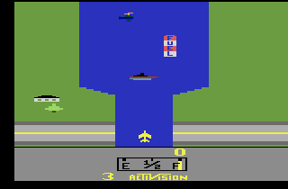

Hardware / 8 biți
Atari 2600
Un joystick, un buton și cartușe care transformau televizorul de acasă într-un loc de joacă.

Cum a început
Consola a apărut în America de Nord în 1977 sub numele Atari Video Computer System. Denumirea Atari 2600 a fost folosită ulterior. Cartușele interschimbabile au permis extinderea bibliotecii fără schimbarea întregii console.
Ce se află în spatele jocului
Detaliile se referă la consola de bază. Modelele, regiunile și accesoriile pot schimba anumite caracteristici.
| Componentă | Caracteristică | De ce contează |
|---|---|---|
| Procesor | MOS Technology 6507 | Un procesor din familia 6502. |
| Memorie RAM | 128 de octeți în consola de bază | Dezvoltatorii trebuiau să fie foarte economi. |
| Controller standard | Joystick cu un buton | Unele jocuri folosesc controllere paddle în locul joystickului. |
| Jocuri și imagine | Cartușe și cipul video TIA | Grafică simplă construită prin tehnici foarte precise. |
Ce o face memorabilă
- Reguli rapide. Jocurile explică adesea o singură provocare prin mișcare și scor.
- Creativitate sub constrângeri. River Raid construiește un traseu cu obstacole și gestionarea combustibilului.
- Accesorii cu roluri diferite. Joystickul și controllerele paddle nu sunt interschimbabile pentru toate jocurile.
Jocuri de explorat
- River Raid (1982): urmărești traseul râului, eviți obstacolele și gestionezi combustibilul. Jocul din captură ilustrează biblioteca consolei.
Înainte de o consolă originală
Dacă te interesează hardware-ul din epocă, începe cu aceste verificări. Pentru descoperirea jocurilor poți folosi și o relansare oficială.
- Verifică ieșirea RF și dacă televizorul sau adaptorul tău o poate folosi.
- Identifică standardul video și alimentatorul potrivit consolei.
- Consultă manualul jocului pentru controllerul necesar și rolul comutatoarelor consolei.
Locul ei în istorie
Atari 2600 este utilă pentru a înțelege începuturile jocurilor de acasă: puțină memorie, comenzi simple și idei care trebuiau să fie atractive imediat. Nu a fost prima consolă cu cartușe, dar a avut un rol important în popularizarea lor.
Continuă lectura
Cronologia Retrocadia și resursele despre istoria jocurilor oferă context suplimentar.